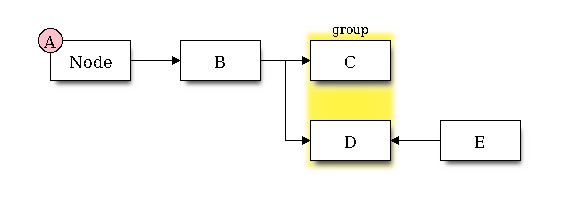

Blockdiag is a program which is written in python and is based on graphviz syntax for making block diagrams. I think that in some cases it is much more easy to use than graphviz, and there is also an online interactive shell for blockdiag.
You should have a look at diagram, node and edge attributes. By default the similar attribute to rankdir in graphviz is called orientation, and it is from left to right similar to graphviz. If you would like to change the orientation from top-to-bottom orientation=portrait. Similar to graphviz subgraph is the group attribute. Also note that directionality in edges is much more simple that graphviz.
To compile the following script make a file example.diag and run on a terminal blockdiag example.diag.
blockdiag {
span_width=30;
node_width=80;
A[label="Node",numbered=A];
A -> B -> C;
B -> D <- E;
group {
color="#FFF344";
label="group";
C; D;
}
}

Figure 1: Blockdiag output
If you would like to setup initialization settings make a file ~/.blockdiagrc with the following content to change the default font.
[blockdiag] fontpath = /usr/share/fonts/TTF/DejaVuSerif.ttf
Seqdiag has also an interactive shell for seqdiag (go to top-right drop-down menu "Switch to other diagram type"). You can find there interactive shells for other implementations like actdiag.